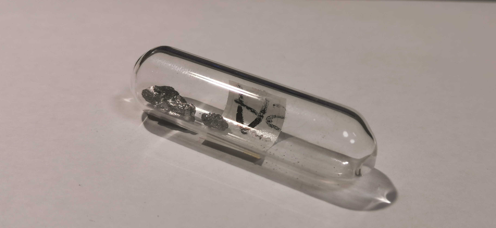

砷
2019.4 灰砷 氩气 99.9999% 来自冥灵 
灰砷：砷单质存在的形态包括金属型的灰砷（α-砷），黄砷，黑砷等分子。常温下灰砷最稳定（在《普通无机化学》上介绍了一种斜方砷，并说明斜方砷室温下不稳定，我没有见过它的样品，不能肯定或否定这种说法）；而由砷蒸汽迅速冷却到低温还会产生黄砷，由于砷蒸汽以四面体As₄分子存在，黄砷有极大可能是这种分子，因而黄砷反应活性很高，甚至可以溶于CS₂，但黄砷在室温下不稳定，受光照就会转化为灰砷（尽管如此，我还是听说过有人收藏了黄砷）；黑砷是一种与黑磷等构的正交多晶结构，在汞存在下在100-175℃生成，加热到280℃会转化为无定形的灰砷。